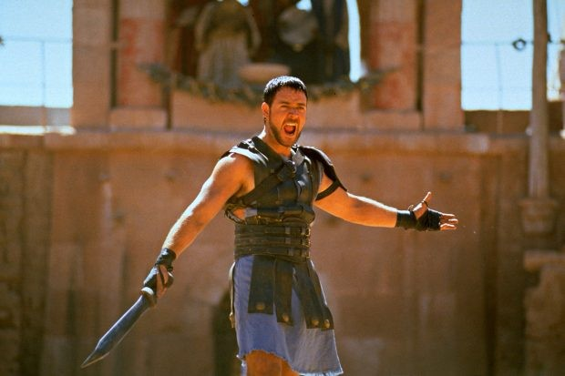

Maximus Decimus Meridius

Summary
My name is Maximus Decimus Meridius, Commander of the Armies of the North, General of the Felix Legions, Loyal
servant to the true Emperor, Marcus Aurelius. Father to a murdered son, husband to a murdered wife—
And I will have my vengeance, in this life or the next."
Education
- University of the Colosseum Rome, 182 AD
Work Experiance
-
Commander of the Armies of the North
Roman Empire | 169 AD 180 AD
- Managed large-scale military campaigns against unruly barbarians (with a 99% success rate)
- Spearheaded innovative battlefield strategies, including “Kill them before they kill you.”
- Was on track for a promotion, but my boss got assassinated—long story.
-
General of the Felix Legions Roman Empire | 170 AD 180 AD
- Led the most elite fighting force in Rome (think of it as the Navy SEALs, but with more sandals).
- Maintained high morale despite freezing cold, endless war, and bad rations.
- Successfully defended the empire, only to be thanked with betrayal and exile.
Skills
- Advanced Swordsmanship
- Battle Strategy & Leadership
- Public Speaking & Crowd Control
- Political Disruption
Awards and Certifications
- Most Feared Gladiator" Award Colosseum, 182 AD.
- Honorary Title: "Romes Biggest Problem" Emperor Commodus, 182 AD.
Other
© Maximus Decimus Meridius. All right reserved